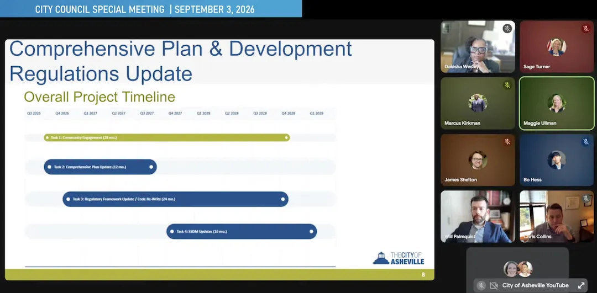

Can Land Use Reform Wait?
October 8, 2026
This member commentary post does not necessarily reflect the views of Asheville For All or its members.
Asheville City Council’s “agenda briefings” happen every Thursday that precedes a Tuesday city council meeting. You can watch them on YouTube. They are mostly staid, cordial affairs, with Asheville’s city manager and assistant city manager informing the council about what’s coming up that they might have to consider.
As I said, they are cordial affairs, and I don’t want to give the impression that sparks flew, but on September 3rd, when the conversation turned to the upcoming planned UDO rewrite, there was a brief moment of tension. The two sides in the discussion are worth digging into.
First, some background.
The Planned UDO Rewrite
The UDO, or unified development ordinance, is the piece of law where all of Asheville’s rules around land use development sit. It was written in the 1990s, and since then has been updated with various tweaks. And, we’ve had some nice changes recently, specifically for promoting infill housing. But because it’s so old, and has been amended a bunch of times, Asheville’s UDO is not only outdated but also somewhat tortuous.
City staff have been talking about doing a large-scale, comprehensive rewrite for a while. Now it seems to be moving forward. In September, City Council approved nearly one and a half million dollars to go to a firm that will not only help to rewrite the UDO, but also to update the city’s comprehensive plan as well.
When will this work be completed? The current timeline suggests the end of 2028. We know that these timelines are never set in stone, and delays happen.
The “Interim Amendments”
At the start of this year, even as plans to find a contractee for the UDO rewrite were already underway, city government (presumably, the council, mayor, and staff) recognized the need for more immediate fixes to the UDO while long-term changes were being teed up. Thus the “interim amendments” were born. Staff wanted to target relatively non-controversial changes that could be passed quickly, and that makes sense: Different timelines for different scales. The result was that by the end of summer, Asheville effectively abolished its “single family only zoning,” quite a symbolic win, even if it won’t entirely create affordable, walkable neighborhoods by itself.
The Case for a Moratorium
Getting back to the aforementioned tension: the thorniness arrives if you ask various figures whether the city should follow with more interim amendments. At the September 3rd agenda briefing, the city manager appeared to suggest that any future tweaks to the UDO prior to the UDO rewrite should be off the table.
The case for this, I think, is that any small adjustments now will complicate things. A comprehensive rewrite can tackle problems that small adjustments can’t. It can completely change the map, and reduce the quantity of zoning districts. (I believe this has been stated as a goal.) It can rewrite the very terms in which the UDO establishes its parameters. (For a random example, the new UDO could include “FAR,” or “floor-area ratio,” as a means to regulate building envelopes. I’m not sure this is desirable, but I wrote about it a little bit a while back.)
The case for a moratorium on interim changes does have one interesting aspect. The state of North Carolina passed a law, a year or two ago, that prevents cities from “downzoning” its land use. The law isn’t crystal clear on exactly when and where it applies. But I could see the case that this complicates a dual-timeline approach for improving and rewriting the UDO simultaneously. You wouldn’t want to get stuck in a situation where an interim change ends up being more permissive than the final rewritten UDO in some specific aspect. That could theoretically open up the city to legal troubles.
The Case for More Interim Amendments
At that early September agenda briefing, several councilors pushed back against the idea that interim amendments should be off the table. And, in case you haven’t guessed, I think those councilors are right.
First, the obvious case: the sooner that change happens the better. When land use regulations are improved, new housing (or mixed use walkable developments, etc.) doesn’t sprout up overnight. The best time to make beneficial changes to the zoning code, the saying goes, is five years ago. The second best time to do it is now.
There have been some articles in the news lately to suggest that new housing has been mitigating rent increases in the “tri-county area,” and that’s good. But some of the analysis on this news has been superficial. None of the news suggests that Buncombe County is “overbuilding,” and that goes double for Asheville, the city itself. In fact, the areas outside of Asheville appear to be continuing to build much faster than Asheville relative to their populations, and that’s not ideal. (Presumably, one of the goals of the new UDO rewrite will be to make opportunities for infill development greater in the parts of town that are closer to jobs, amenities, schools, and public transit.)
All of this is to say that there is some urgency.

Second, it’s worth looking at other cities that have recently undertaken large, bottom-up rewrites to their land use codes. In several cases, these efforts have been delayed or obstructed by lawsuits and other kinds of pushback.
Atlanta’s big zoning reform effort is on hold. So is Durham’s. And Austin, Texas went through a major, years-long effort to rewrite its zoning code in the 2010s, before it got hung up in the courts, and was eventually pronounced “dead.”
The good news is that in the years after Austin’s code rewrite was shelved, the city simply went ahead with smaller changes, passed one-at-a-time. These changes, including minimum lot size reform and other zoning changes, as well as targeted plans for growth in places like the city’s “west campus” neighborhood, and bonds for subsidizing below-market rents too, have resulted in a better situation for renters across the board.
Why do cities seem to have greater zoning code success with serial smaller amendments than large rewrites? Maybe it’s all just a little easier to digest when it comes in bits and pieces. Or perhaps this shotgun approach simply overwhelms the opponents of change. Or it’s easier for the changes to slip on by those who benefit from the status quo. I don’t want to make it sound like there’s something nefarious about all of this. But I do think strategizing is important.
What Interim Fixes Could Come Next?
Here’s a couple of possibilities for small changes that could be accomplished in under a year.
First, the city could embark on minimum lot size reform: reducing, or even eliminating them outright.
A recent essay by one of the country’s most respected housing policy researchers, Shane Phillips, suggests that “allowing smaller lot sizes” is “the most effective thing that built-out cities can do” (emphasis is mine).
Minimum lot size requirements largely stem from 20th century classism and racism veiled as “planning science” around residential density and infrastructure provision. However, planning advocates today make the case that “performance zoning” factors like water and sewer connections and capacity, easements, setbacks, height limits, fire code, and environmental rules (i.e. trees, stormwater) are much more clear and objective standards that affect lot size than an arbitrary square footage amount.
Simply reducing the minimum allowed lot size feels to me like a fix that could easily coincide with a bigger rewrite. It’s straightforward enough.
Second, the city could attack the “landscape buffer” problem. This is clearly something that’s been on the city’s radar, as I’ve mentioned before. In my very non-professional opinion, when I look at Merrimon Ave., I often wonder if all the underutilized commercial lots there aren’t being developed are that way because of the buffers that would be required for the back of each respective lot. (Remember that Merrimon Ave. was one of the corridors that was “upzoned,” in a sense, last year.)
Again, judging from what we’ve seen in behind-the-scenes glimpses, the new buffer rules would be relatively simple and not entangled with various other aspects of the zoning code.
* * *
Do I think a bottom-up UDO rewrite could be great? Yes, I’m not denying the potential. Knowing our city, though, I know that getting this done and approved without compromising it to death is going to be an uphill battle. And even though it’s a battle worth fighting, it doesn’t mean that there shouldn’t be other, parallel battles to consider too.
This member commentary post does not necessarily reflect the views of Asheville For All or its members.